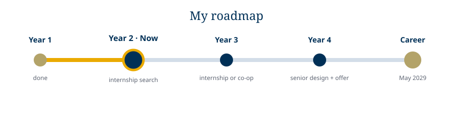

I want to build products that people use every day. The best ones I can think of mix hardware and software. Game consoles, controllers, smart devices and the chips inside them all live in that space. My long term goal is to work as a computer engineer in embedded systems or hardware for gaming and consumer tech. Someday I would like to lead a team that designs a product from the first sketch to the store shelf.
I also want to keep making games. Game development taught me to plan big projects and to care about the person using what I build. I want that same focus on the user in my engineering career.

Do well in ECE 2020, CS 1331, CS 2050 and Physics 2. Finish my Discovery Project and keep this portfolio up to date. Go to the ECE Career Fair to practice talking with companies, even before I am ready for an internship.
Take circuits and programming for hardware. Join a hands on student team or club at Georgia Tech. Use the Hive to build a second hardware project with a custom circuit board. Apply for my first internship or a research spot with a professor.
Pick my ECE threads based on what I liked most. Complete a co-op or internship in industry. Start leading parts of team projects instead of only working on them.
Finish senior design with a project I am proud to show. Turn internship experience into a full time offer. Decide if a master's degree would help me reach my goal faster.
Start as an engineer on a product team. Learn from senior engineers. Keep building side projects. Over time move into a role where I guide the design of whole products.
I am strong at teaching myself and building things. I need more experience with analog circuits, circuit board design and working on a large engineering team. My plan above is built to close those gaps one step at a time.